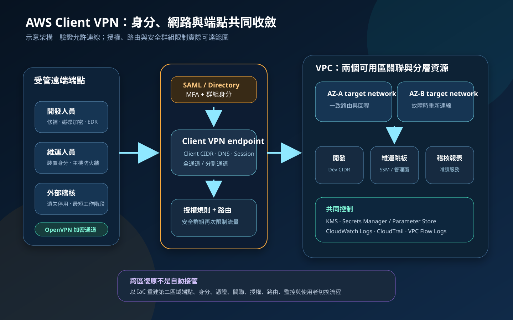

AWS Client VPN：遠端存取、身分授權與端點安全
AWS Client VPN 是受管的遠端存取 VPN，讓使用者從筆電或行動裝置經加密通道連入 VPC、其他 AWS 網路或地端資源。安全性不只取決於「VPN 有沒有連上」，還取決於身分驗證、群組授權、路由、安全群組、端點健康、工作階段生命週期與持續監控是否共同收斂。
作者：Dr. William｜查閱與發布：2026-10-24
服務定位
AWS Client VPN 是以 OpenVPN 為基礎的全受管遠端存取服務。管理者建立區域型 Client VPN endpoint，選擇 IPv4、IPv6 或雙堆疊連線型態，關聯 VPC 子網路作為 target networks，再設定驗證方式、授權規則、路由、DNS、安全群組與日誌。使用者透過相容用戶端建立工作階段，取得來自 client CIDR 的位址後，依核准路徑存取私有資源。
它適合分散式團隊、維運人員、外包人員或短期專案安全連入 AWS 與混合網路。若需求是站點對站點的固定網路互連、每位使用者都必須通過完整裝置信任代理、超大規模全球接入，或應用本身可直接採身分感知代理，則應比較 Site-to-Site VPN、Verified Access、企業 SASE／ZTNA 或其他架構。
核心概念與服務邊界
連線與存取元件
- Client VPN endpoint：承接用戶端連線、驗證、路由與授權的區域型受管端點。
- Client CIDR：分配給 VPN 使用者的位址池，不得與目標 VPC、地端或常見使用者本機網段重疊。
- Target network：與端點關聯的 VPC 子網路；至少關聯一個子網路後才能建立工作階段。
- 身分驗證：支援 Active Directory、SAML 2.0 聯合登入與雙向憑證，也可將憑證與使用者型驗證組合。
- 授權規則：依目的 CIDR 與目錄／SAML 群組授予網路存取，預設未授權即拒絕。
- 路由表：決定目的網路經哪個 target network 傳送；路由存在不代表使用者已獲授權。
- 安全群組：套用於關聯網路介面，並與目標資源安全群組共同限制實際流量。
治理、可用性與觀測
- 全通道：預設將用戶端流量導入 VPN，便於集中檢查，但會增加頻寬、延遲與資料傳輸成本。
- 分割通道：只把端點路由表中的目的網路推送至用戶端，降低不必要流量，但端點可同時使用本地網際網路。
- 多可用區：可關聯不同可用區的子網路；各關聯需具備一致路由與安全條件。
- 連線日誌：將連線、嘗試與中斷事件送至 CloudWatch Logs，支援稽核與故障排除。
- CloudTrail：記錄 Client VPN 控制面 API，追蹤端點、關聯、路由與授權變更。
- 端點裝置控制：企業仍需管理磁碟加密、修補、惡意程式防護、裝置身分與遺失停用。
- 工作階段治理：設定合理最長連線時間、撤銷流程與離職停權，避免長期存取。
適合與不適合的使用情境
適合
- 員工需要從受管裝置存取私有 EC2、RDS、內部 API、管理工具或地端系統。
- 組織已使用 SAML 身分提供者或 AWS Managed Microsoft AD，能以群組管理存取。
- 需要受管 VPN 端點，避免自行維護 VPN appliance、修補、容量與可用區節點。
- 不同職務只應到達不同 CIDR，且可用授權規則、安全群組與應用權限分層控制。
- 需要連線日誌、CloudTrail 與集中告警支援稽核及事件調查。
不適合或不能單獨完成
- 資料中心、分公司與 VPC 之間需要長期固定互連；通常應評估 Site-to-Site VPN 或 Direct Connect。
- 只想公開單一 Web 應用，卻要求所有人取得整段網路可達性；可比較 Verified Access 或應用層代理。
- 未管理使用者端裝置，卻把 VPN 驗證視為可信端點證明。
- 要求跨區端點自動接管；Client VPN endpoint 為區域資源，跨區需另建端點、身分、DNS、路由與操作流程。
- client CIDR、VPC 與使用者家用網路大量重疊，且無法調整位址規畫。
- 需要無限長工作階段、共享帳號或永久憑證；這些模式會削弱可追溯性與撤銷能力。
示意故事案例：醫療軟體團隊的分層遠端維運
以下為示意案例，不代表特定機構或正式部署。 一家醫療軟體公司有開發、維運與外部稽核三類遠端人員。內部 Git、監控平台與資料庫都位於私有子網路，生產資料庫禁止直接從一般使用者網段連線。
團隊在同一區域的兩個可用區關聯 Client VPN target networks，使用 SAML 聯合登入與 MFA，並以群組授權不同目的 CIDR。開發人員只能到達開發 VPC，維運人員只能經跳板與 Session Manager 到達核准系統，稽核人員只可讀取報表服務。端點採分割通道，但只發布必要私有路由；目標資源安全群組引用 Client VPN 關聯安全群組，不直接信任寬廣 client CIDR。
所有管理操作使用 IAM 最小權限與短期憑證；應用程式機密放在 Secrets Manager 或 Parameter Store，資料、設定與日誌依分類使用 KMS。CloudWatch Logs 保存連線事件，CloudTrail 監控端點與授權變更，VPC Flow Logs 協助追查實際流量。公司同時以裝置管理要求磁碟加密、修補與端點防護，並在第二區域預先建立可重建範本與演練流程。

建置與運作流程
- 盤點人員與資源：列出角色、裝置類型、目的 CIDR、通訊埠、資料分類、同時連線數、RTO、RPO 與稽核需求。
- 設計位址：選擇不與 VPC、地端、對等網路或常見用戶端 LAN 重疊的 client CIDR，保留成長與雙堆疊需求。
- 選擇驗證：企業人員優先評估 SAML 或 Active Directory 搭配 MFA；高風險情境可再組合雙向憑證與裝置控制。
- 準備伺服器憑證：在 ACM 管理端點需要的伺服器憑證，治理簽發、更新、私鑰保護與到期告警。
- 建立端點：設定連線型態、client CIDR、DNS、傳輸協定、連接埠、工作階段期限、分割通道與日誌。
- 關聯多可用區：至少選擇兩個不同可用區子網路；每個關聯的路由、NAT、檢查與回程路徑保持一致。
- 建立授權規則：為每個目的 CIDR 指定最小群組，不使用寬廣的全員與 0.0.0.0/0 規則取代設計。
- 建立完整路由：每個 target network association 都要有相同必要目的路由，並確認 VPC、Transit Gateway 與地端回程。
- 收斂安全群組：端點關聯安全群組只允許必要出站；目標資源以安全群組引用或精確來源限制連接埠。
- 決定流量模式：依監管、端點風險、效能與成本選擇全通道或分割通道；記錄可接受的本地網際網路風險。
- 保護管理面：Client VPN、ACM、身分系統、CloudWatch 與路由變更採 IAM 最小權限、MFA、短期憑證與雙人覆核。
- 保護機密與資料：應用機密使用 Secrets Manager 或 Parameter Store，不放入用戶端設定；資料與日誌依需求使用 KMS。
- 啟用可觀測性：開啟連線日誌、CloudTrail、CloudWatch 指標與 VPC Flow Logs，對異常登入、拒絕與配置變更告警。
- 發放用戶端：透過受控軟體與裝置管理發放設定，限制匯出，建立憑證、帳號、裝置與離職撤銷流程。
- 驗證與演練：測試各群組正向與反向權限、DNS、MTU、路由重疊、單可用區故障、連線撤銷與第二區域重建。
成本、可用性與維運考量
Client VPN 成本通常包含每個端點的 target network association 小時計費、每個使用者連線小時計費、公有 IPv4 位址、資料傳輸、NAT Gateway、Transit Gateway、CloudWatch Logs、CloudTrail、VPC Flow Logs、KMS、憑證與身分目錄等。即使無使用者連線，只要關聯持續存在仍可能產生費用；尖峰同時連線與長工作階段會直接影響成本。
多可用區關聯可降低單一可用區影響，但所有關聯必須具有相同目的路由與可達條件，否則使用者可能因連到不同關聯而得到不一致結果。端點位於單一 AWS 區域；跨區復原需在另一區域重建端點、子網路關聯、憑證、SAML／目錄設定、授權、路由、安全群組、DNS 與用戶端切換方式。
全通道可集中出口檢查與記錄，但所有上網流量會消耗 AWS 網路與 NAT 資源。分割通道降低流量與延遲，卻允許端點同時連接私有網路與本地網際網路，因此必須以端點防護、DNS 安全、主機防火牆與裝置健康控制補足。修改分割通道端點的路由表可能重設既有連線，變更窗口要納入使用者影響。
Client VPN 特有資安風險與控制
- 寬廣授權規則：依群組與目的 CIDR 最小化授權，避免對所有使用者開放整個 VPC 或 0.0.0.0/0。
- 路由與授權混淆：路由只建立路徑，授權規則才允許使用者；兩者都需存在並接受測試。
- 安全群組過度開放：目標資源只接受 Client VPN 關聯安全群組或精確必要來源與連接埠。
- client CIDR 重疊：建立組織級 IPAM，測試家用網路、VPC、地端與對等網路常見範圍。
- 憑證複製或失竊：個別簽發、短效化、保護私鑰、建立撤銷清單與離職立即停用；不得共享同一用戶端憑證。
- 缺少 MFA：SAML 或目錄登入啟用 MFA；管理 AWS 資源同樣採聯合登入、MFA 與短期憑證。
- 未受管端點：VPN 連線前後都要有磁碟加密、修補、EDR、主機防火牆、裝置鎖定與遺失清除。
- 分割通道橋接風險：限制私有路由，停用不必要轉送，監控端點，同時保護本地 DNS 與網際網路流量。
- 多可用區路由不一致：每個 association 建立相同必要路由，逐一測試可達性與回程。
- 長時間工作階段：設定合理最長時間，定期重新驗證，建立高風險事件強制中斷程序。
- 設定檔外洩：透過受控管道發放，限制檔案權限；設定檔不得包含應用程式密碼、Token 或其他業務機密。
- 日誌盲區：啟用連線日誌、CloudTrail 與 Flow Logs；注意部分驗證失敗可能需要從身分提供者或憑證系統補足證據。
- 管理面權限過大：端點、路由、授權、關聯與日誌權限分離，使用 IAM 最小權限、MFA、短期憑證與變更審批。
- 機密散落：應用程式機密使用 Secrets Manager 或 Parameter Store，資料與日誌依需求用 KMS 加密。
- 跨區只有文件：以 IaC 重建第二區域並實測 DNS、身分、路由、容量、資料與使用者切換，驗證 RTO／RPO。
共同責任邊界
AWS 負責 Client VPN 受管服務、AWS 端基礎設施、端點可擴展性與服務控制面的安全。客戶負責身分來源、MFA、憑證生命週期、client CIDR、target network、授權規則、路由、安全群組、DNS、端點裝置、應用授權、資料分類、日誌保存與復原設計。
VPN 加密只保護通道，不會判斷裝置是否已遭入侵，也不會自動限制應用資料操作。管理者應使用 IAM 最小權限、MFA 與短期憑證；工作負載使用角色取得臨時權限；應用機密使用 Secrets Manager 或 Parameter Store；資料、備份與日誌依需求使用 KMS。正式 credential、Access Key、Secret Key、Token、密碼或 cookie 不得出現在網頁、設定檔、程式碼、IaC state、標籤或日誌。
上線與維運可執行檢查清單
- □ 已確認 Client VPN 而非 Site-to-Site VPN、Verified Access 或其他 ZTNA 更符合需求。
- □ client CIDR 與 VPC、地端、對等網路及常見用戶端 LAN 不重疊。
- □ 驗證方式使用 SAML／目錄與 MFA，或具個別撤銷能力的雙向憑證。
- □ ACM 伺服器憑證、用戶端憑證與身分提供者憑證都有到期及撤銷流程。
- □ 每個角色只取得必要目的 CIDR，未使用寬廣全員授權取代群組設計。
- □ 每個目的網路同時具有正確授權規則、Client VPN 路由與回程路由。
- □ 每個可用區 association 具備一致路由、NAT、檢查與安全群組條件。
- □ 端點與目標資源安全群組只允許必要協定、連接埠與來源。
- □ 全通道或分割通道的風險、成本、端點要求與變更影響已核准。
- □ 使用者裝置已套用修補、磁碟加密、EDR、主機防火牆與遺失處置。
- □ 管理操作採 IAM 最小權限、MFA、短期憑證、職責分離與變更覆核。
- □ 應用機密使用 Secrets Manager 或 Parameter Store，未寫入用戶端設定。
- □ 連線日誌、CloudTrail、CloudWatch 告警與 VPC Flow Logs 已啟用並以 KMS 保護。
- □ 已測試允許與拒絕案例、DNS、MTU、重疊網段、閒置與最長工作階段。
- □ 已測試單一可用區故障，確認使用者能重新連線且所有目的網路仍可達。
- □ 已建立離職、裝置遺失、憑證失竊與高風險登入的立即中斷流程。
- □ 已估算關聯小時、連線小時、IPv4、資料傳輸、NAT、日誌、KMS 與身分成本。
- □ 第二區域可由 IaC 重建端點、關聯、授權、路由、安全群組與監控。
- □ 正式設定與日誌不含 credential、Access Key、Secret Key、Token、密碼或 cookie。
AWS 官方一手來源
- What is AWS Client VPN?（查閱：2026-10-24）
- How AWS Client VPN works（查閱：2026-10-24）
- Client authentication in AWS Client VPN（查閱：2026-10-24）
- Client authorization in AWS Client VPN（查閱：2026-10-24）
- AWS Client VPN authorization rules（查閱：2026-10-24）
- Split-tunnel on AWS Client VPN endpoints（查閱：2026-10-24）
- Connection logging for an AWS Client VPN endpoint（查閱：2026-10-24）
- Monitoring AWS Client VPN（查閱：2026-10-24）
- Resilience in AWS Client VPN（查閱：2026-10-24）
- AWS VPN pricing（查閱：2026-10-24）
- AWS Shared Responsibility Model（查閱：2026-10-24）
內容說明
本文依查閱日可用的 AWS 官方文件整理，作為基礎學習與架構討論材料；實際部署仍須依最新區域支援、IPv4／IPv6、驗證方式、用戶端相容性、配額、定價、資料分類、法規、身分治理、裝置管理與故障演練結果調整。